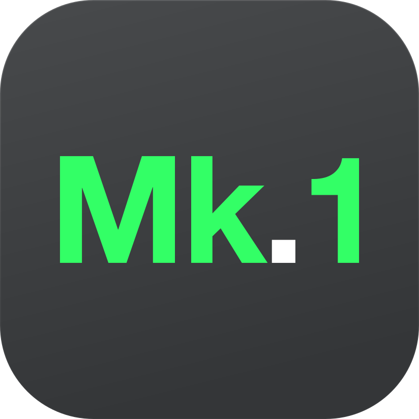

Keep it light.
A small space for your ideas.
Simple by design
- Write in Markdown
- Preview as you go
- Keep your files local
Focus on the document.

Mk.1 Lite打开文件，写下内容，即时预览。多文档标签、清晰的大纲和可自定义的快捷键，放在一个简单的工作空间里。
无需账户。无需把文档上传到云端。
A small space for your ideas.
Focus on the document.
选择你的平台
Apple Silicon · ARM64
本地测试签名，尚未进行 Apple 公证。
Intel / AMD · x64
未使用代码签名证书；Windows 可能显示安全提示。
正在读取版本信息。
把常用功能做好
在标签间切换，保留每份文档的编辑内容、撤销记录、光标和折叠状态。右键可关闭全部或右侧标签。
支持标题、表格、代码块、列表与引用。调整预览字体、字号、行高和宽度，让阅读符合你的习惯。
浏览当前文档所在文件夹，或切换到标题大纲。独立搜索替换窗口提供正则、全字与大小写选项。
自定义模式切换与前后标签快捷键。需要查语法时，点开 Markdown 语法表即可。
开始使用
FAQ
不需要。Mk.1 Lite 是免费、非盈利项目，打开后即可使用。
编辑和预览在本机完成，没有云同步功能。Markdown 中引用的外链图片可能向图片来源发送请求。
不等于。草稿保存在当前应用或浏览器的本地存储中，不能替代文件备份。重要内容请保存到文件。
当前提供 macOS Apple Silicon 版本，Windows x64 构建状态见上方下载区。Android 尚未发布。Mac 安装包使用临时签名，未做 Apple 公证。
请到 GitHub Issues 提交系统版本、应用版本和复现步骤。提交示例时注意去掉私人文档内容。 打开 Issues ↗